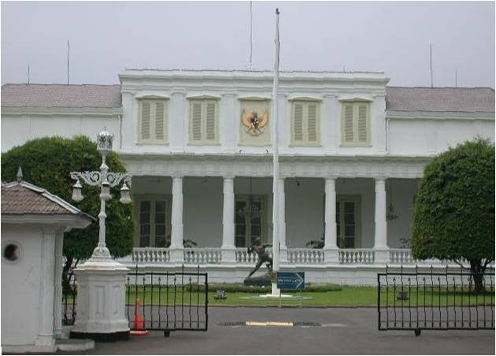
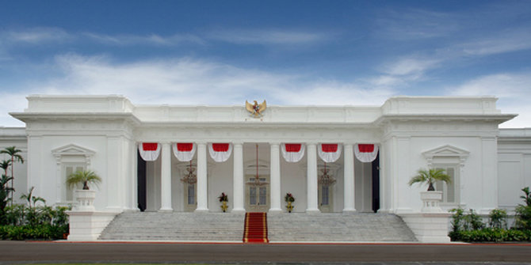
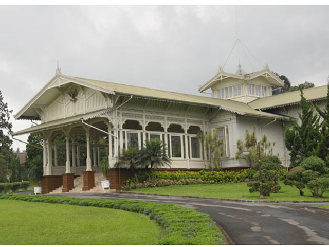
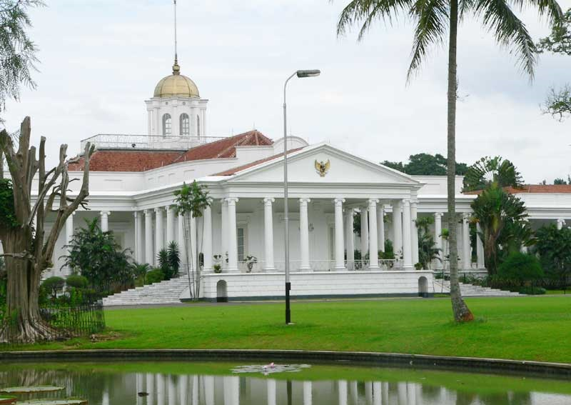
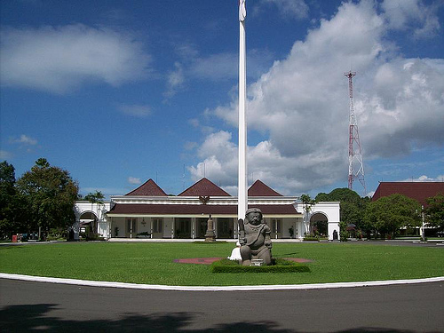
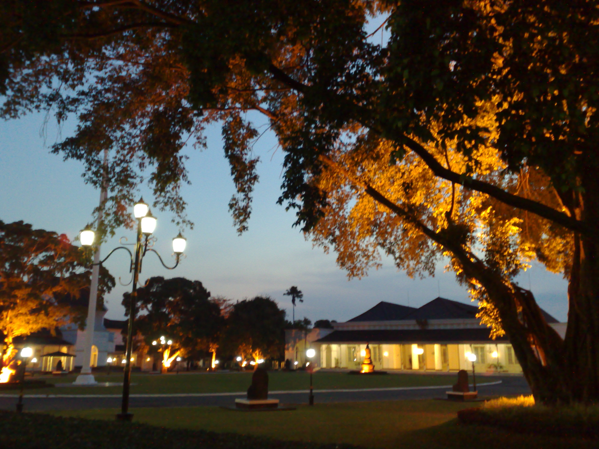

Istana Negara Indonesia

Istana kepresidenan di Jakarta terdiri dari dua bangunan utama yang disebut Istana Negara dan Istana Merdeka. Kedua istana ini merupakan dua buah bangunan utama yang luasnya 6,8 dan terletak di antara Jalan Medan Merdeka Utara dan Jalan Veteran, serta dikelilingi sejumlah bangunan yang sering digunakan kegiatan kenegaraan. Posisi Istana Merdeka menghadap ke Taman Monumen Nasional (Jalan Medan Merdeka Utara), dan Istana Negara yang menghadap ke Sungai Ciliwung (Jalan Veteran). Kedua bangunan itu berada di kawasan yang dimasa lalu bernama Weltervreden (dalam bahasa Belanda berarti ”sangat memuaskan”)’ Kawasan ini dihuni para elit pejabat dan pengusaha Belanda dengan rumah-rumahnya yang besar (loji). Weltervreden adalah kawasan yang tertata cantik dengan pohon-pohon yang dipangkas rapi seperti di taman-taman Eropa.

Istana Merdeka di JakartaPembangunan Istana Merdeka mulai dilakukan pada masa pemerintahan Gubernur Jenderal James Lindon pada 1873.Pembangunan gedung istana ini dilakukan oleh Departemen Pekerjaan Umum dengan pemborong “Firma Prossacra” menelan biaya sebesar f 360.000 dengan pengawasan arsitek Mr. Drossares. Istana Merdeka selesai diibangun pada 1879 masa Pemerintahan Gubernur Jenderal Johan Willem van Landsberge dan sebagai tempat perayaan pernikahan Raja Willem II dengan Puteri Emma Von Waldeck Pyrmont. Sejak itulah istana di Koningsplein ini menjadi tempat kediaman resmi Gubernur Jenderal disamping kediaman resmi lainnya di Buitenzorg (Bogor).

Istana Cipanas terletak di kaki Gunung Gede yang berhawa sejuk. Sejak zaman kolonial Istana Cipanas sudah dijadikan tempat bagi para Gubernur Jenderal. Pemandian air panas, sumber air mineral, serta udara pegunungan yang bersih, makin menyempurnakan kompleks itu sebagai tempat persinggahan yang digemari para pejabat tinggi. Presiden Soekarno menjadikan Istana Cipanas sebagai tempat mencari inspirasi bagi pidato-pidatonya. Pada 1954, Bung Karno memerintahkan dua orang arsitek, R.M. Soedarsono dan F. Silaban, membuat desain sebuah studio terpencil di salah satu puncak bukit dalam lingkungan Istana Cipanas sebagai tempat merenung.

Istana Bogor Istana Bogor terletak di pusat kota Bogor, di atas tanah berkultur datar, seluas sekitar 28.86 hektar, di ketinggian 290 meter dari permukaan laut, beriklim sedang dengan hawa yang sejuk. Istana Bogor dizaman kolonial menjadi salah satu tempat favorit Gubernur Jendral Hindia Belanda untuk beristirahat dari penat dan panasnya kota Batavia. Setelah masa kemerdekaan, Istana Kepresidenan Bogor mulai dipakai oleh pemerintah Indonesia sejak Januari 1950. Setelah kemerdekaan fungsi istana Bogor berubah menjadi kantor urusan kepresidenan serta menjadi kediaman resmi Presiden Republik Indonesia.

Istana kepresidenan di Yogyakarta Kota Yogyakarta mempunyai peran penting dalam revolusi. Ketika Belanda melakukan agresi militer Januari 1946, untuk menduduki kembali Indonesia, pemerintahan Republik Indonesia mengungsi ke Yogyakarta. Presiden Sukarno dan Moh Hatta lalu memimpin pemerintahan dari Yogyakarta. Gedung Agung dibangun sebagai kediaman resmi Residen pada Mei 1824 ketika Residen Anthonie Hendriks Smissaert memegang jabatan. Gubernur Jenderal di Batavia menunjuk seorang arsitek bernama A.A.J. Payen yang juga guru seni lukis Raden Saleh untuk membuat desain gedung.

Istana kepresidenan di Bali Dari keenam istana kepresidenan, Istana Tampaksiring mempunyai sejarah unik. Istana ini adalah satu-satunya yang dibangun oleh pemerintah Indonesia setelah merdeka. Istana ini menjadi semakin berbeda dengan istana lainnya, sebab Presiden Soekarno memberi banyak masukan pada rancang-bangun Istana Tampaksiring. Bung Karno menggagas pendirian sebuah kediaman presiden di Tampaksiring untuk merespon semakin seringnya menerima tamu negara dari berbagai negara. Pulau Bali yang tekenal di mancanegara karena keindahannya juga menjadi minat dari banyak tamu negara. Karena itu sebuah Istana kepresidenan untuk menyambut tamu negara didirikan di pulau Bali.